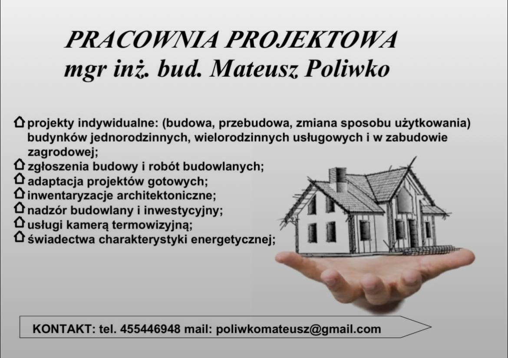

Projekty indywidualne
Budowa, przebudowa i zmiana sposobu użytkowania budynków jednorodzinnych, wielorodzinnych, usługowych oraz w zabudowie zagrodowej.
Projekty budowlane · nadzór · termowizja
Kompleksowa obsługa inwestora: od projektu indywidualnego lub adaptacji projektu gotowego, przez zgłoszenia budowy, po nadzór nad realizacją.
Skontaktuj sięBudowa, przebudowa i zmiana sposobu użytkowania budynków jednorodzinnych, wielorodzinnych, usługowych oraz w zabudowie zagrodowej.
Przygotowanie dokumentacji i formalności związanych ze zgłoszeniem budowy oraz robót budowlanych.
Dostosowanie wybranego projektu typowego do działki, lokalnych warunków i Twoich potrzeb.
Pomiary i opracowanie inwentaryzacji istniejących obiektów budowlanych.
Nadzór nad przebiegiem prac budowlanych oraz reprezentowanie interesów inwestora.
Badania termowizyjne budynków pozwalające wykryć mostki termiczne i straty ciepła.
Opracowanie świadectw charakterystyki energetycznej budynków i lokali.
Pracownia Projektowa prowadzona przez mgr. inż. bud. Mateusza Poliwko zajmuje się projektowaniem i obsługą inwestycji budowlanych – od pierwszego szkicu, przez formalności, po nadzór na budowie.

Masz plany budowlane? Zadzwoń lub napisz – chętnie doradzę.